| Date: | 2013-10-30 12:12:12 |
|---|
Abstract
Glazier API Performance Tests Bench result of TestSuite.mix_for_load_testing: The complex test with different random requests
Table of contents
The test TestSuite.mix_for_load_testing contains:
The bench contains:
The number of Successful Tests Per Second (STPS) over Concurrent Users (CUs).
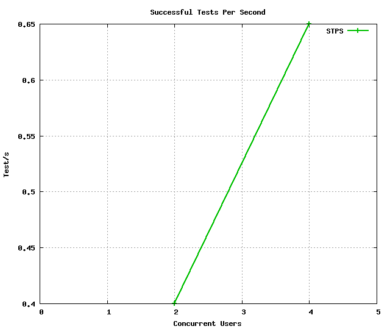
CUs STPS TOTAL SUCCESS ERROR 2 0.400 8 8 0.00% 4 0.650 13 13 0.00%
The number of Successful Pages Per Second (SPPS) over Concurrent Users (CUs). Note that an XML RPC call count like a page.
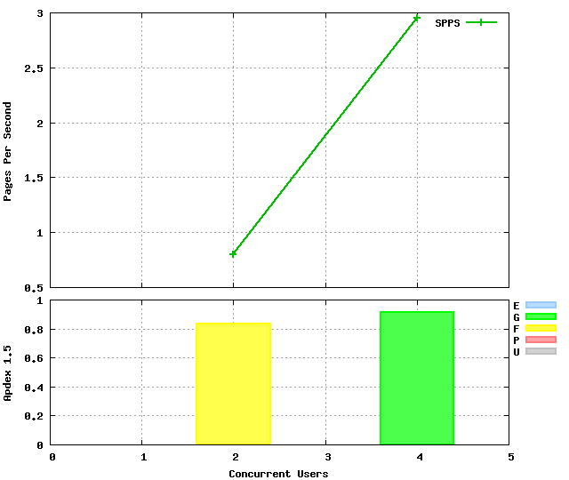 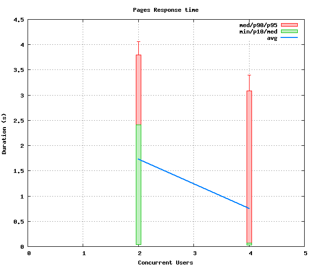
CUs Apdex* Rating SPPS maxSPPS TOTAL SUCCESS ERROR MIN AVG MAX P10 MED P90 P95 2 0.833 FAIR 0.800 4.000 16 16 0.00% 0.034 1.727 4.058 0.037 2.411 3.797 4.058 4 0.915 Good 2.950 8.000 59 59 0.00% 0.025 0.753 3.623 0.031 0.067 3.082 3.393 * Apdex 1.5
The number of Requests Per Second (RPS) successful or not over Concurrent Users (CUs).
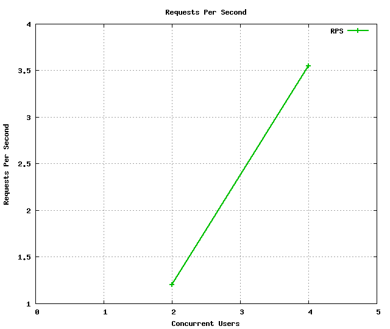 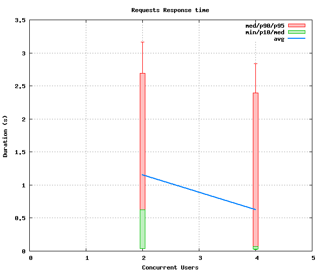
CUs Apdex* Rating* RPS maxRPS TOTAL SUCCESS ERROR MIN AVG MAX P10 MED P90 P95 2 0.833 FAIR 1.200 4.000 24 24 0.00% 0.034 1.151 3.171 0.039 0.625 2.690 3.165 4 0.915 Good 3.550 8.000 71 71 0.00% 0.025 0.626 3.372 0.032 0.067 2.397 2.840 * Apdex 1.5
The 5 slowest average response time during the best cycle with 4 CUs:
Req: 001, post, url /environments
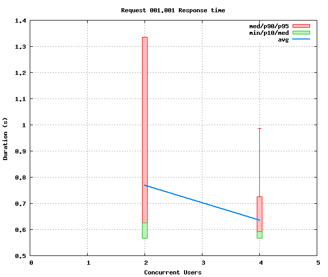
CUs Apdex* Rating TOTAL SUCCESS ERROR MIN AVG MAX P10 MED P90 P95 2 1.000 Excellent 8 8 0.00% 0.567 0.769 1.335 0.567 0.625 1.335 1.335 4 1.000 Excellent 16 16 0.00% 0.566 0.635 0.986 0.567 0.592 0.725 0.986 * Apdex 1.5
Req: 001, delete, url /environments/e54b02291d34408dbb2cb3a1c3bb885a
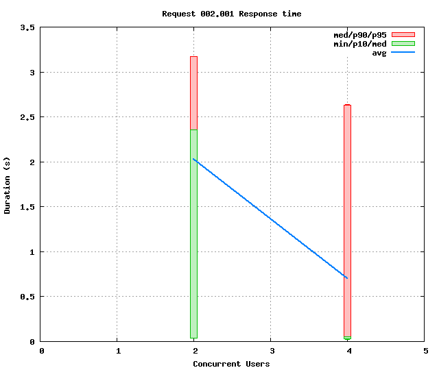
CUs Apdex* Rating TOTAL SUCCESS ERROR MIN AVG MAX P10 MED P90 P95 2 0.625 POOR 8 8 0.00% 0.034 2.026 3.171 0.034 2.360 3.171 3.171 4 0.867 Good 15 15 0.00% 0.025 0.698 2.637 0.028 0.052 2.628 2.637 * Apdex 1.5
Req: 001, post, url /environments/fc937b361a954d6dab4e3812f0506355/services
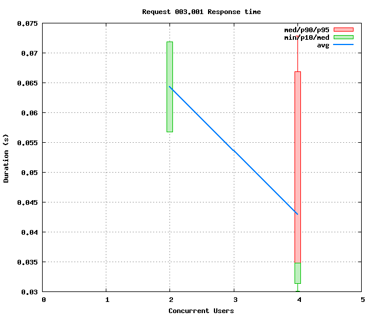
CUs Apdex* Rating TOTAL SUCCESS ERROR MIN AVG MAX P10 MED P90 P95 2 1.000 Excellent 2 2 0.00% 0.057 0.064 0.072 0.057 0.072 0.072 0.072 4 1.000 Excellent 11 11 0.00% 0.030 0.043 0.073 0.031 0.035 0.067 0.073 * Apdex 1.5
Req: 001, post, url /environments/fc937b361a954d6dab4e3812f0506355/services
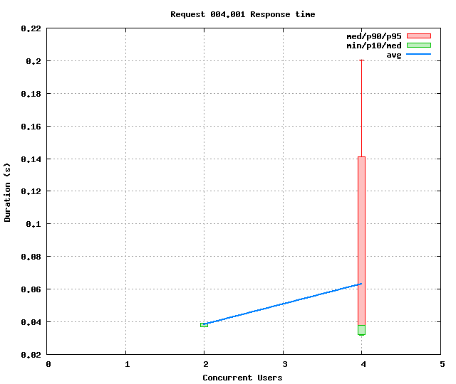
CUs Apdex* Rating TOTAL SUCCESS ERROR MIN AVG MAX P10 MED P90 P95 2 1.000 Excellent 2 2 0.00% 0.037 0.038 0.039 0.037 0.039 0.039 0.039 4 1.000 Excellent 11 11 0.00% 0.032 0.063 0.200 0.032 0.038 0.141 0.200 * Apdex 1.5
Req: 001, post, url /environments/fc937b361a954d6dab4e3812f0506355/services
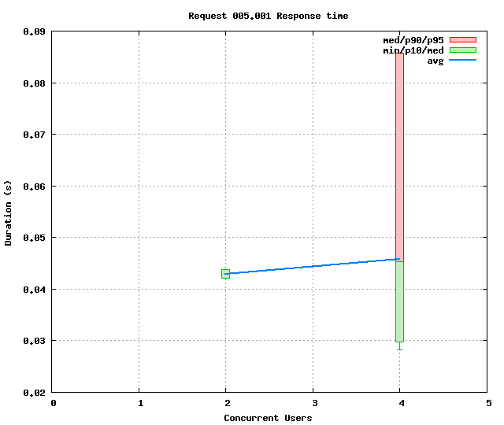
CUs Apdex* Rating TOTAL SUCCESS ERROR MIN AVG MAX P10 MED P90 P95 2 1.000 Excellent 2 2 0.00% 0.042 0.043 0.044 0.042 0.044 0.044 0.044 4 1.000 Excellent 10 10 0.00% 0.028 0.046 0.086 0.030 0.045 0.086 0.086 * Apdex 1.5
Req: 001, delete, url /environments/fc937b361a954d6dab4e3812f0506355
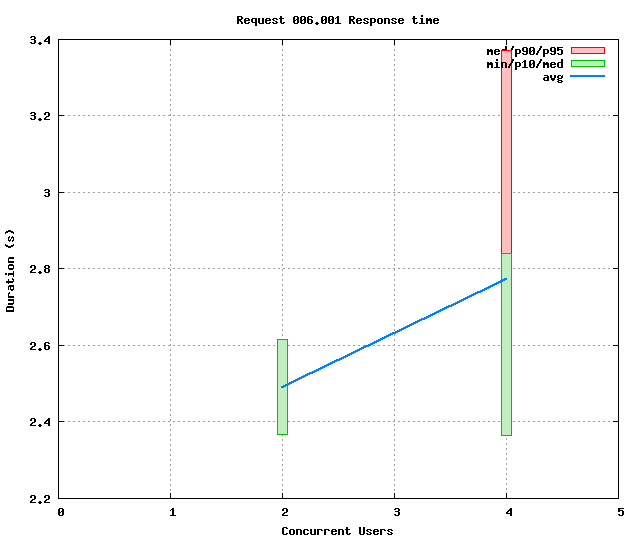
CUs Apdex* Rating TOTAL SUCCESS ERROR MIN AVG MAX P10 MED P90 P95 2 0.500 POOR 2 2 0.00% 2.367 2.491 2.615 2.367 2.615 2.615 2.615 4 0.500 POOR 8 8 0.00% 2.365 2.772 3.372 2.365 2.840 3.372 3.372 * Apdex 1.5
CUs: Concurrent users or number of concurrent threads executing tests.
Request: a single GET/POST/redirect/xmlrpc request.
Page: a request with redirects and resource links (image, css, js) for an html page.
STPS: Successful tests per second.
SPPS: Successful pages per second.
RPS: Requests per second, successful or not.
maxSPPS: Maximum SPPS during the cycle.
maxRPS: Maximum RPS during the cycle.
MIN: Minimum response time for a page or request.
AVG: Average response time for a page or request.
MAX: Maximmum response time for a page or request.
P10: 10th percentile, response time where 10 percent of pages or requests are delivered.
MED: Median or 50th percentile, response time where half of pages or requests are delivered.
P90: 90th percentile, response time where 90 percent of pages or requests are delivered.
P95: 95th percentile, response time where 95 percent of pages or requests are delivered.
Apdex T: Application Performance Index, this is a numerical measure of user satisfaction, it is based on three zones of application responsiveness:
Satisfied: The user is fully productive. This represents the time value (T seconds) below which users are not impeded by application response time.
Tolerating: The user notices performance lagging within responses greater than T, but continues the process.
Frustrated: Performance with a response time greater than 4*T seconds is unacceptable, and users may abandon the process.
By default T is set to 1.5s this means that response time between 0 and 1.5s the user is fully productive, between 1.5 and 6s the responsivness is tolerating and above 6s the user is frustrated.
The Apdex score converts many measurements into one number on a uniform scale of 0-to-1 (0 = no users satisfied, 1 = all users satisfied).
Visit http://www.apdex.org/ for more information.
Rating: To ease interpretation the Apdex score is also represented as a rating:
Report generated with FunkLoad 1.16.1, more information available on the FunkLoad site.